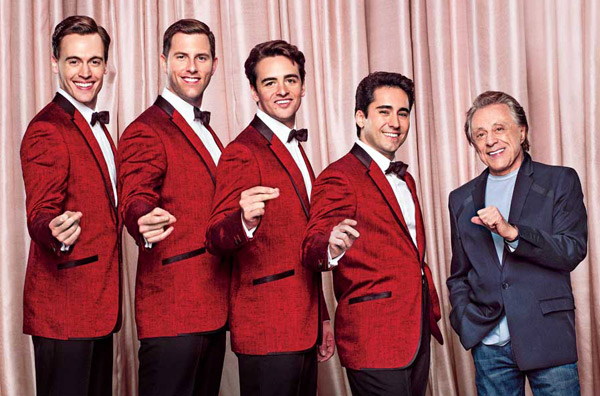

Frankie Valli (or, originally known as Francesco Stephen Castelluccio before he changed his name for stardom) is a U.S vocalist known for his distintive falsetto voice. He became renowned for his voice as the lead vocalist of The Four Seasons, a group that became a major hit during the 1960's. Some of their biggest hits included: "Sherry", "Walk Like a Man", and "Working My Way Back to You". When Frankie Valli took on a solo career and became well know for certain singles, especially "Can't Take My Eyes Off of You". You may be thinking, "If this guy was big in the 60's, why does a twenty-something college student like him?" Well, I'm glad you asked. In middle school, my Nana introduced my to the music of The Four Seasons through a new musical coming out called Jersey Boys. It was a musical about how The Four Seasons came together, who each of the four members are, and how the stories of their lives intertwined and connected with each other as they became one of the most famous groups in music history. The picture below shows the Broadway stars of Jersey Boys with the one and only Frankie Valli himself.
